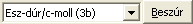

A kotta-szerkesztő ablak felső részét egy terjedelmes eszköztár
foglalja el. Az egyes gombok fölé mozgatva az egeret, kiíródik a
neve, és a billentyűkombináció, amivel aktiválható. A Diatár program
"csak a legszükségesebb" kotta elemeket tudja megjeleníteni, de a
lista még így is hosszú:
- Hangjegyek:
segítségével lehet beírni hangokat. Amennyiben kijelölünk egy
kottarészt, a gombok lenyomása a kijelölésben található hangjegyek
hosszát változtatják. Az elemek az eszköztár sorrendjében balról
jobbra (zárójelben a hozzá tartozó billentyűkombináció): Longa (L),
Brevis (R), Semi-brevis (S), Egészhang (1), Félhang (2), Negyedhang
(4), Nyolcad-hang (8), Tizenhatod-hang (6), Hangmagasság
változtatása (fel/le nyíl billentyűk), Pont azaz hang-nyújtás (P)
- Kotta forma:
ezekkel a
gombokkal meglévő kotta stílusát lehet formázni, módosítani: a
hangok szárát, illetve elhelyezkedését. A lehetséges funkciók a
következők:
- Gerenda (G): nyolcadokat és tizenhatodokat egy csoportba
foghatunk, ilyenkor különálló zászlók helyett a hangokat egy
gerenda jelöli össze. Legfeljebb négy hangot tud a program
összekötni, és mi határozhatjuk meg, hogy mely szárak álljanak
felfelé, illetve lefelé.
- Tömör írásmód (Shift+G): gregorián kottázáshoz való,
ilyenkor a hangjegyek közé nem tesz szünetet a program, minden
kottafej közvetlen az előző mellé kerül.
- Száratlan neumák (Ctrl+G): szintén főleg gregoriánhoz
használható a szárak nélküli kottázás, csak a hangmagasságot
jelöli, a hang hosszát nem (illetve csak áttételesen). A tömör
írásmóddal együtt alkalmazva szép melizmákat (egy szótagra
éneklendő hajlításokat) kottázhatunk.
- Szárak felfelé/lefelé (Ctrl+fel/le nyíl): ezzel állíthatjuk
be, hogy az aktuális vagy összejelölt hangjegyek szára merre
álljon.
- Módosító jelek:
a
kijelölt hang(ok) elé kerül az adott módosítójel. Bé vagy
leszállítás (B), Feloldójel (F), Kereszt vagy emelés (K), Bebé vagy
dupla leszállítás (Ctrl+B), Kettőskereszt vagy dupla emelés (Ctrl+K).
- Szünetjelek:
a
hangokhoz hasonlóan működnek, egy új szünetjelet szúrnak be, vagy a
kijelölésben levő szünetek hosszát módosítják, rendre: Egész szünet
(Ctrl+1), Fél szünet (Ctrl+2), Negyed szünet (Ctrl+4), Nyolcad
szünet (Ctrl+8), Tizenhatod szünet (Ctrl+6), Pont vagy
szünet-nyújtás (Ctrl+P).
- Ütemvonalak:
a
hangok metrum szerinti csoportosítására, elválasztásra, lezárásra,
illetve egy dallamrész ismétlésére szolgálnak, sorban: Szimpla
ütemvonal (U), Dupla ütemvonal (Shift+U), Rövid cezúra vagy
levegővételi hely (C), Hosszú cezúra vagy elválasztás (Shift+C),
Záró ütemvonal (Ctrl+U), Nyitó ismétlőjel (I), Záró ismétlőjel (Shift+I),
Záró-kezdő ismétlőjel (Ctrl+I).
- Agogikai jelek:
a hangok
alá/fölé kerülő előadási jelek beszúrására. Balról jobbra: tenuto
(T), staccato (O), marcato (Ctrl+M), martellato (Shift+Ctrl+M),
korona (Ctrl+O), trilla (Ctrl+T), kettős trilla (Shift+Ctrl+T),
mordent (Ctrl+D), kettős mordent (Shift+Ctrl+D).
- Kulcsok:
az
ötvonalas kottarendszer viszonyítási pontját határozzák meg. Fontos
tudni, hogy az utolsó kulcs (az előjegyzéssel együtt) a kotta minden
sorába kiíródik, ezért azt csak egyszer - célszerűen a versszak első
sorának elején - kell megadni. A beírható kulcsok a gombok
sorrendjében: Violin-kulcs vagy Gé-kulcs (V), Basszus-kulcs vagy
F-kulcs (A), Szoprán-kulcs (Shift+S), Mezzo-kulcs (Shift+M),
Alt-kulcs (Shift+A), Tenor-kulcs (Shift+T), Bariton-kulcs (Shift+B).
- Metrumok (ütemjelzések):
az egyes
ütemek hosszát, a zene lüktetését adják meg: Négy-negyed (Shift+4),
Két-negyed (Shift+2), Három-negyed (Shift+3), Három-nyolcad (Shift+8),
Hat-nyolcad (Shift+6), Két-ketted (Ctrl+Shift+2), Három-ketted (Ctrl+Shift+3),
Öt-negyed (Ctrl+Shift+5), Hat-negyed (Ctrl+Shift+6).
- Előjegyzések (hangnemek):
 hét
kereszttől hét béig az összes hangnem beállítható, az előjegyzés az
aktuális kulcs után minden sorba kiíródik, ezért célszerű a versszak
legelején egyszer megadni. Az Alt+E betűvel tudjuk aktivizálni a
legördülő listát, melyből ki tudjuk választani a kívánt hangnemet,
majd azt az ENTER billentyűvel vagy a "Beszúr" gombbal, az Alt+B
billentyűkombinációval tudjuk a kottába helyezni.
Mivel a kottázás összetett feladat, sőt: igazából művészet, a következő oldalon
néhány összefoglaló tanács olvasható a kottázásról.
Tovább >>